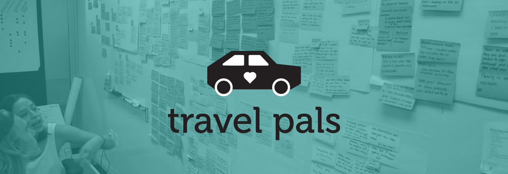
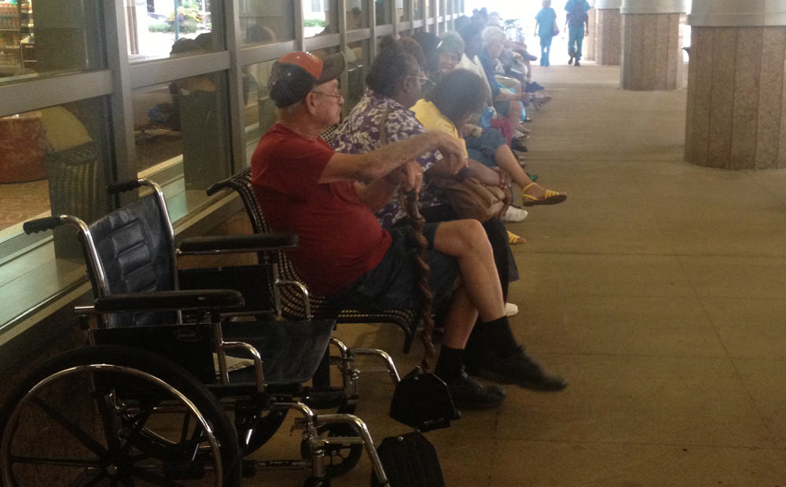
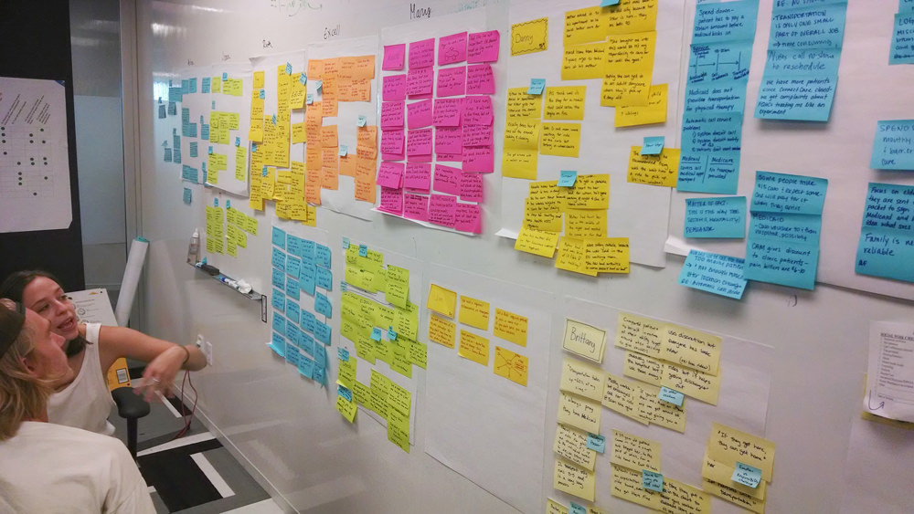
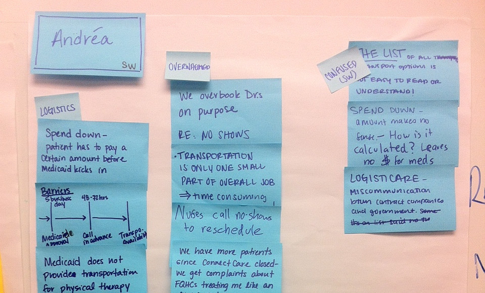
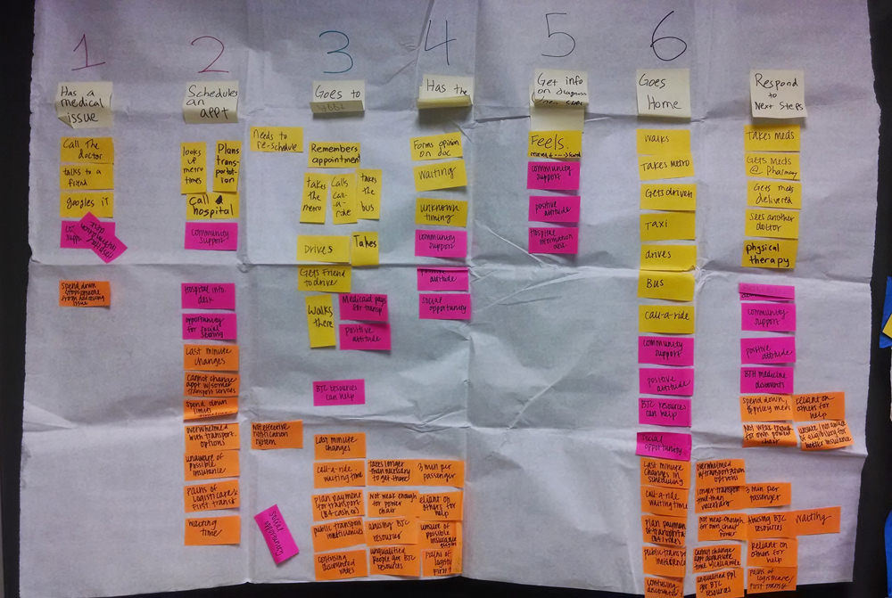
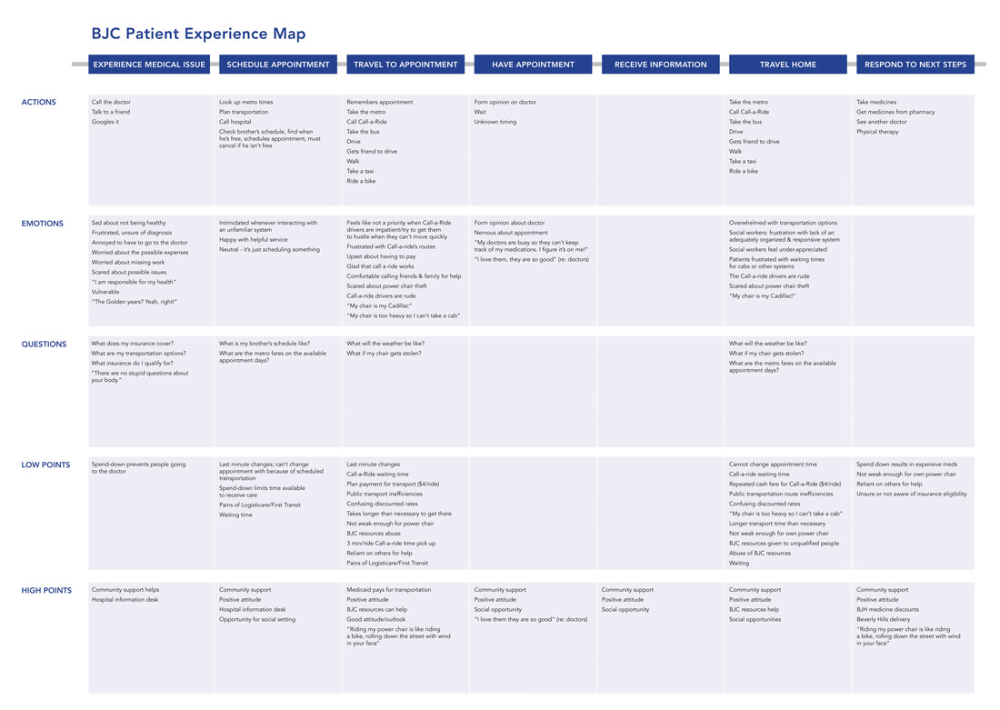
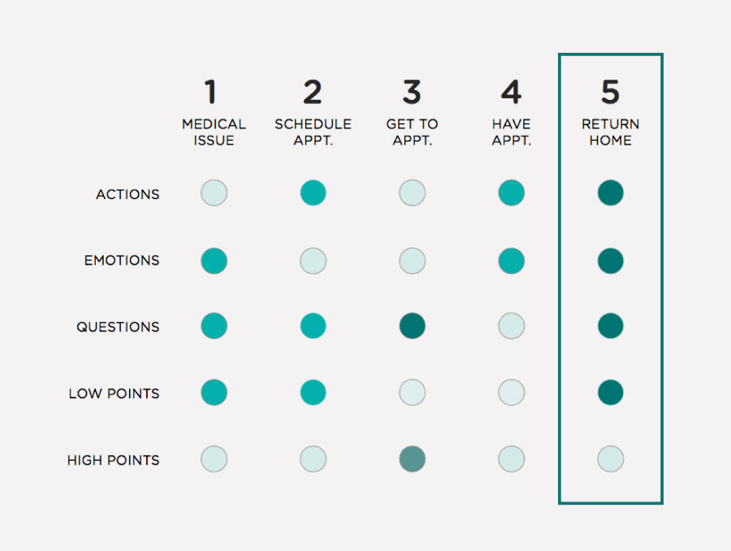
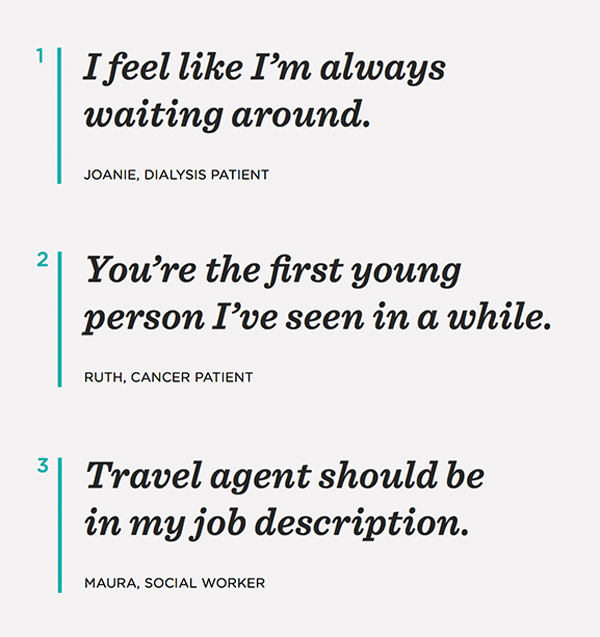
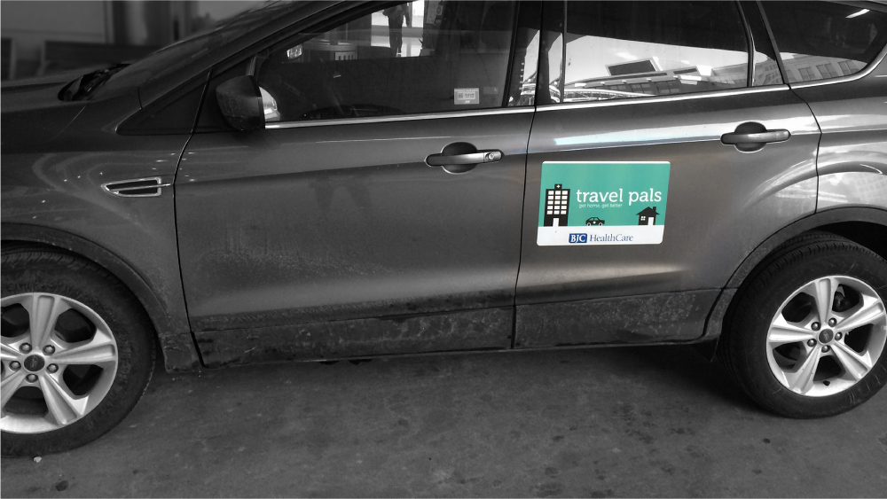

Travel Pals
2014
Making transportation for chronic hospital patients more human-centered
Chronic patients at BJC Healthcare struggled to make their appointments, which had negative effects on their health outcomes. Preliminary research pointed to transportation issues, so the BJC Center for Innovation challenged a group of design students to research and rethink the experience.

We started with in-person interviews with social workers and patients at BJC hospitals. Then, we synthesized our notes into patient profiles and shared insights.


We made a list of the seven steps of the patient experience and mapped out the actions, emotions, questions, high points and low points of each step.


The experience map helped us reframe our project to focus on the end of the patient experience, where there was a disproportionate amount of issues.

From our interviews, we identified three main pain points of getting patients home. We focused our energy around alleviating these concerns.

We ideated five potential solutions to our redefined problem and mapped them on axises of cost and ease of adoption.
[image of axis]
Based on our criteria, Travel Pals emerged as the best solution. We built a video prototype to pitch the idea to stakeholders at BJC.
A few months after the pitch, BJC contacted our team telling us that they'd like to continue with Travel Pals and build a working prototype. I designed them a graphic they could put on a car, which took real patients home.

This project is a collaboration between myself, Alexis Turim and Patrick Buggy. The car outline was designed by Mourad Mokrane via the Noun Project and the video illustrations borrow heavily from UK illustrator Adrian Johnson.
Special thanks to all of the professors and guest lecturers: founder of UNICEF Innovation Unit Erica Kochi, past AIGA president Doug Powell, founder of Mayo Clinic’s Center for Innovation Maggie Breslin, and founder of Tomorrow Partners Gaby Brinks. I have design crushes on all of them.
Another shoutout to Karolina Michniewicz and everybody at the BJC Center for Innovation for being incredible partners.
Special thanks to all of the professors and guest lecturers: founder of UNICEF Innovation Unit Erica Kochi, past AIGA president Doug Powell, founder of Mayo Clinic’s Center for Innovation Maggie Breslin, and founder of Tomorrow Partners Gaby Brinks. I have design crushes on all of them.
Another shoutout to Karolina Michniewicz and everybody at the BJC Center for Innovation for being incredible partners.